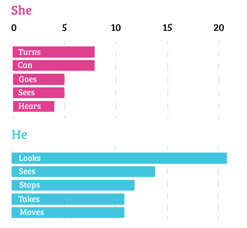

Home
Resume
Writing
The Gender Divide in Star Wars Scripts
How Often "He" and "She" were Written in Star Wars Scripts
She turns, He looks
Top 5 most common words following "she" or "he" in all Star Wars scripts
